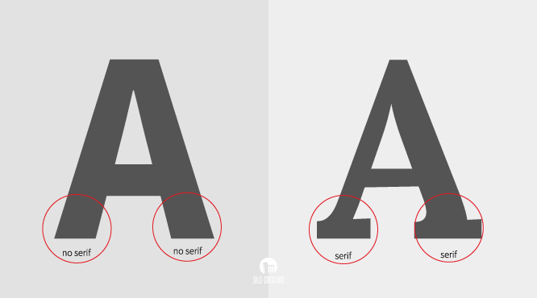
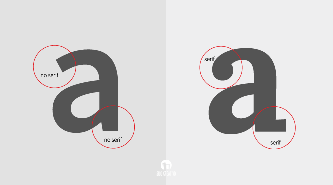

“con Serif” y “sin Serif o Sans-Serif”
Tipografía tipo Sheriff
A modo de recordatorio diremos que la «serifa» son las volutas o adornos decorativos que aparecen en cada una de las letras de este tipo. Dentro del grupo son distintas entre sí, ya poseen diferentes estilos que las hacen diferenciarse entre ellas. Normalmente se caracterizan por ser unas tipografías con elegancia y estilo.
Las tipografías Serif no funcionan en tamaños pequeños. Existe una creencia acerca de que las tipografías serif en tamaños muy pequeños pueden tener problemas a la hora de leerse debido a que las volutas pueden «emborronar» las palabras o hacer que se entiendan mejor la diferencias entre espacios.>
Tipografía tipo San Sheriff
Se considera el tipo más moderno. En la actualidad en la que nos desprendemos de lo accesorio y solemos quedarnos solo con lo funcional (como ocurre en el flat design), es fácil pensar que es una tipografía más actual, cuyos bordes son simples. Un tipo minimalista que puede parecer que da lugar a una lectura más clara y legible.
Unidades de medida relativa y absoluta. Pros y contra
Es recomendable no utilizar más de tres tipos distintos de tipografías dentro de una misma página web. Esto permite unificar la estética de la página.
Medidas fijas:
Son aquellas que especifican una medida en términos absolutos, sin tener en cuenta el contexto donde se están aplicando.Unidades de medida absoluta aplicados al CSS serían:
- px: Píxeles
- in: Pulgadas (1 in es igual a 96px)
- pt: Puntos (1 pt es igual a 1/72 in)
- cm: Centímetros
- mm: Milímetros
- pc: Picas
Medidas relativas:
Las unidades relativas de CSS son aquellas que tienen en cuenta el contexto donde se encuentran. Son relativas a las dimensiones del contenedor donde se han definido. Por ejemplo %, es una unidad relativa, puesto que 30% de ancho no será lo mismo para un elemento situado dentro de un contenedor de 2000px de anchura o sobre un contenedor de 1000px de anchura. Unidades de medida relativa aplicados al CSS serían:
- %: porcentaje
- rem: Root-em
- vw: Viewport width
- vh: Viewport Height
- vmin: Viewport menor, entre altura o anchura
- vmax: Viewport mayor, entre altura o anchura
- ex: anchura de la fuente para la letra "x"
- ch: la anchura del carácter "0" (cero)
Iconos
Para que un icono guste, no debe violar los principios fundamentales de su construcción Los iconos en el diseño web son elementos pequeños solo en tamaño, pero no en importancia o significado. Son necesarios para indicar información. Estos son anclajes visuales que ayudan a captar la atención del usuario y lo dirigen a realizar la acción específica. Los iconos ayudan a:
- Atraer atención
- Entender el significado
- Navegar por la interfaz
- Ahorrar en espacio visual